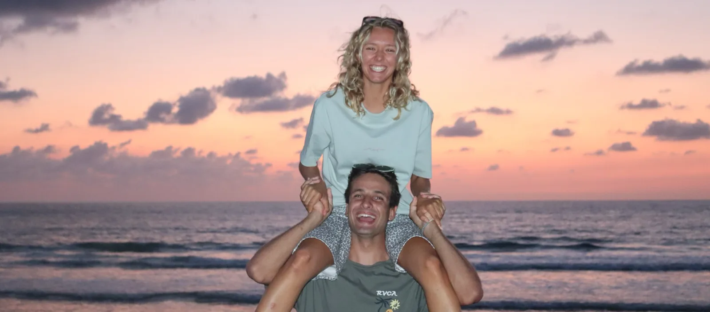

Joon and Paco
We're the two creators of Atelier MALDA. We make upcycled, one-of-a-kind beanies by hand, in Annecy.

Handmade, by the two of us
Every beanie stays in our hands from start to finish: choosing the textile, making it, finishing it, photographing it. We have no factory and no subcontractors. It's slower, and that's the point: we'd rather make few beanies and be proud of each one.
Upcycling is where it starts
We don't make new fabric. Our beanies are born from textiles that already exist, and we give them a second life. The result: patterns and colours you won't find anywhere else.
Annecy, between lake and mountains
We live and create in Annecy, in Haute-Savoie. Between the bise, the cold wind over the lake, and days out on the Semnoz, a beanie is part of everyday life. That everyday life is what made us want to create MALDA.
Where to find our beanies
All our beanies are sold on Vinted. This site shows them in photos, with a direct link to each listing.